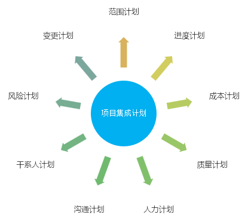

软件项目管理
SPM项目集成计划 Integrated
范围计划、进度计划、成本计划、质量计划、风险计划等等是相互联系的

集成计划示例
- 导言
- 项目概述
- 项目任务范围
- 项目目标
- 项目实施策略
- 项目组织结构
- 计划结构
- 项目生存期
- 项目管理对象
- 项目风险分析
- 项目估算
- 项目时间计划
- 项目关键资源计划
- 项目设施工具计划
- 质量管理计划
- 配置管理计划
- 项目管理评审
- 项目度量计划
- 沟通计划
1.1 目的
1.2 范围
1.3 缩写说明
1.4 术语定义
1.5 引用标准
1.6 参考资料
1.7 版本更新条件
1.8 版本更新信息
平衡项目4要素 Components
- 范围 Scope
- 质量 Quality
- 成本 Cost
- 进度 Time
制约分析
- C 与 S 成一定正比关系
- C 与 Q 成一定的正比关系
- C 与 T 成一定的反比关系
C = f(S, Q, T)
执行控制的基本步骤 Steps
- 建立计划标准
建立项目正确完成应该达到的目标，它是确保项目能够按照项目计 划进行实施的具体执行任务的说明书，是进行过程控制的依据
- 观察项目的性能
建立项目监控和报告体系，确定为控制项目必要的数据。在项目 实施过程中，为了便于管理和控制执行情况，必须做好项目计划实施记录，掌握好项目的实 际进展情况。记录还可以为项目实施中的检查、分析、协调、控制、计划修订和总结等提供 原始资料
- 测量和分析结果
将项目的实际结果与计划进行比较，掌握计划实施情况，协调各 项工作，采取有效措施解决实施中出现的各种矛盾，调配资源以克服实施工作的薄弱环节， 努力实现项目的动态平衡，从而保证项目计划目标的实现
- 采取必要措施
如果实际的结果同计划有误差，则采取必要的纠正措施，必要时修 改项目计划。可以选用项目管理软件来协助项目执行过程
- 做好计划修订工作，控制反馈
计划不可能一成不变，当项目的内部和外部条件发 生较大变化时，项目计划就要根据实际情况进行必要的更改，以控制计划的实时有效性。如 果修正计划，应该通知有关人员和部门
基于GQM的度量
Unless we determine what shall be measured and what the yardstick of measurement in an area will be, the area itself will not be seen.
- Drucker, P. F. (1993). People and Performance
计划：事前约定
度量：事后验证与持续反馈
What gets measured, gets managed.
Goal-Question-Metric
以目标为起点、以问题为桥梁、以指标为验证
不直接规定项目该做什么或花多少钱，而是通过设定目标 Goal、提出问题 Question、采集指标 Metric 来评估项目是否健康、过程是否有效、结果是否符合预期
强调度量不是孤立的数据收集，而是服务于组织战略和管理决策的结构化过程
- 目标层 Goal
明确度量的最终目的，必须与组织的商业目标或项目关键成功因素对齐
目标的设定需具体、可衡量、可实现、相关性强且有时限性
如，“提升客户满意度”或“缩短产品上市周期”
- 问题层 Question
围绕目标提出一系列关键问题，用于澄清“如何达成目标”
应聚焦于过程中的瓶颈、风险点或质量短板
如，“当前版本的缺陷率是否影响用户体验？”或“开发阶段的返工比例是否在可控范围内？”
- 指标层 Metric
为每个问题设计可采集、可量化的数据指标，用于客观评估问题的现状和趋势
指标的选择需确保数据可获得、成本可控、解读无歧义
如，“每千行代码的缺陷数”、“需求变更频率”、“测试用例执行通过率”等
核心计划执行控制 Core